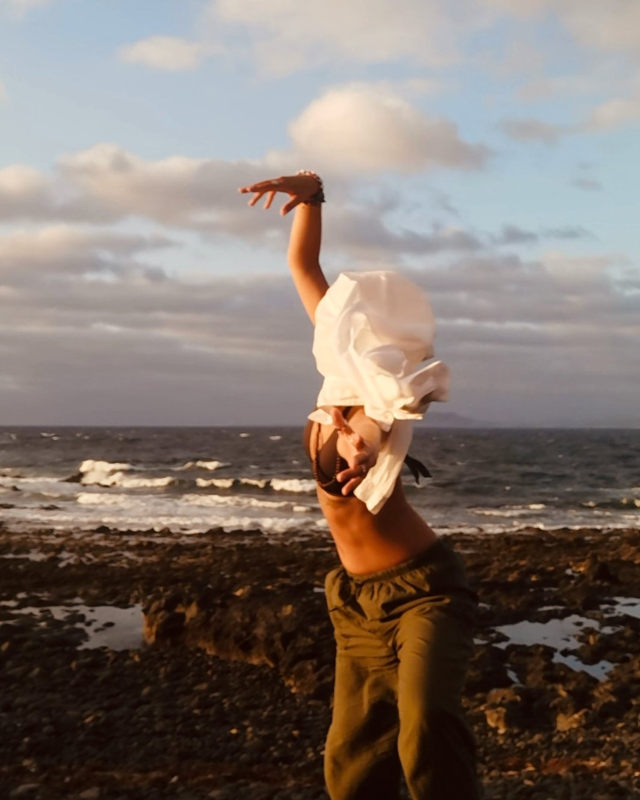

Mi ricordo: l'inizio fu amore subito. Un brivido nelle dita. Un braccio che si alzava andando a toccare il cielo con l'estensione di tutte le falangi.
C'è una frattura che attraversa la cultura occidentale da secoli. Il dualismo cartesiano ha lasciato un'eredità profonda: il corpo ridotto a strumento, la conoscenza relegata alla sola sfera razionale. Il risultato è visibile ovunque — corpi da ufficio, corpi da schermo, corpi abituati a occupare il minimo spazio possibile.
Cartografia del Gesto nasce da una domanda semplice e radicale: cosa succederebbe se il corpo ricevesse il permesso — non attraverso un'istruzione tecnica, ma attraverso una narrazione — di ricordarsi di sé?
"Prima danza, poi pensa. È l'ordine naturale delle cose."Samuel Beckett
Tutto comincia a Fuerteventura, dove per la prima volta una voce ascoltata produce nel corpo un movimento spontaneo, non cercato, necessario. Non una tecnica appresa: un ricordo.
Da lì un processo lungo nove mesi. In Italia, lezioni di danza vissute prima come spettatrice, poi come corpo che sperimenta. A Lisbona, mesi in contatto con due scuole di danza, approfondendo la pratica somatica con maestri che lavorano su temi urgenti: il corpo come sede della conoscenza, il gesto come linguaggio pre-verbale.
A Fuerteventura si torna, e qualcosa si chiude — o forse si apre. Nasce il testo: Cara Amica.
La ricerca si muove sulla frontiera tra danza somatica e neuroscienze cognitive. Il punto di partenza è Merleau-Ponty: il corpo non è un oggetto nel mondo, ma la nostra maniera di abitarlo. È in questa distinzione — tra il corpo che siamo e il corpo che abbiamo — che si radica l'intera ricerca.
Le neuroscienze confermano l'intuizione: la teoria dell'embodied cognition mostra che il pensiero non abita solo la testa, abita il corpo intero. Quando ascoltiamo "tirare una rete" o "sollevare le braccia verso il cielo", la corteccia premotoria si attiva come se stessimo davvero compiendo quell'azione.
Cara Amica è una lettera scritta con il corpo, indirizzata a un'assenza. La forma epistolare genera intimità immediata, abbassa le resistenze, crea uno spazio in cui il corpo si sente al sicuro per muoversi.
Dentro la narrazione vivono istruzioni — alcune esplicite, alcune nascoste nella texture della lingua. Il lettore segue la storia, ma il corpo segue le istruzioni. Il movimento emerge senza che venga imposto.
Prima di portare Cara Amica in uno spazio pubblico, il testo è stato testato su corpi reali: un gruppo di volontarie che nella vita non danzano, riunite in un parco, in un ambiente protetto. Hanno ricevuto solo l'audio del testo.
I corpi si sono mossi. Le riprese sono dinamiche. La magia è avvenuta.
La prima tappa pubblica è un'installazione: la spettatrice entra in uno spazio piccolo, raccolto. Sente l'audio in loop. Vede, in una ripresa in loop, i corpi delle volontarie muoversi sotto quello stesso testo. Non è chiamata a muoversi — è testimone. Ma il sistema dei neuroni specchio risponde comunque, alla parola e all'immagine insieme.
Perché il corpo sa. Lo ha sempre saputo.